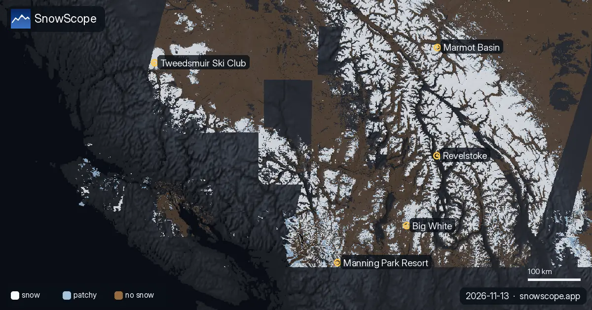
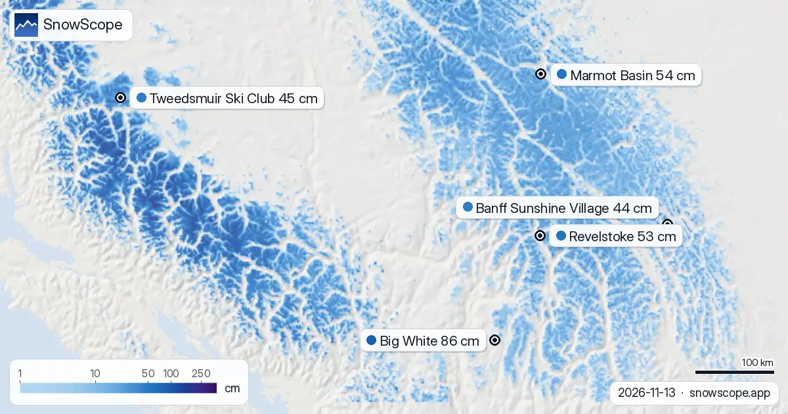
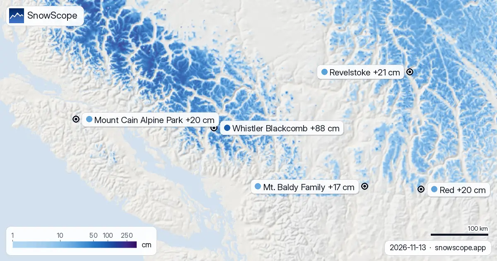
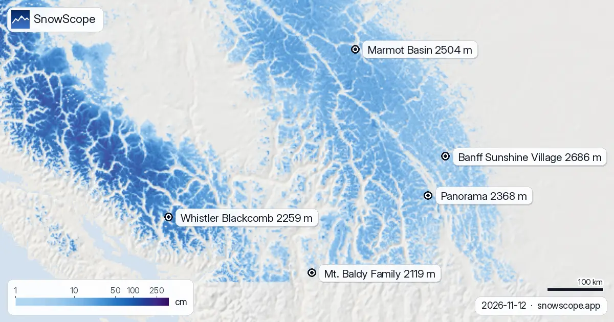
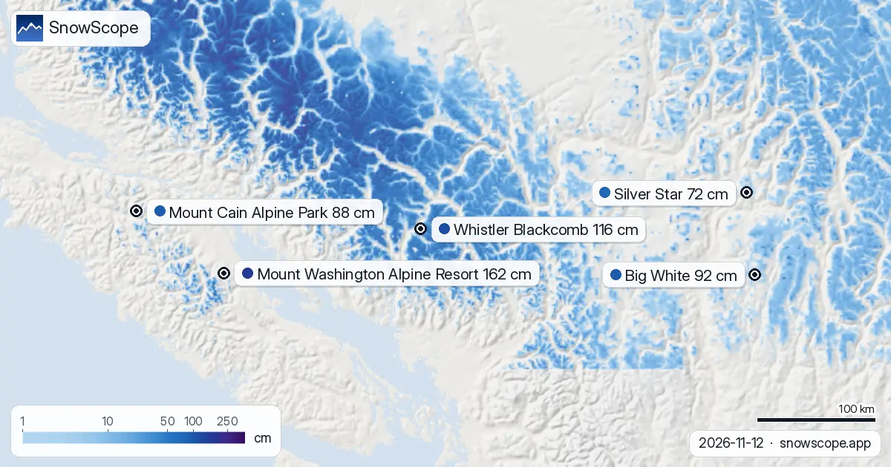
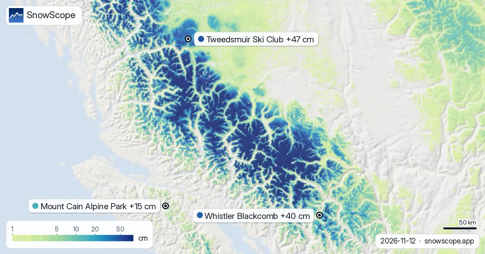
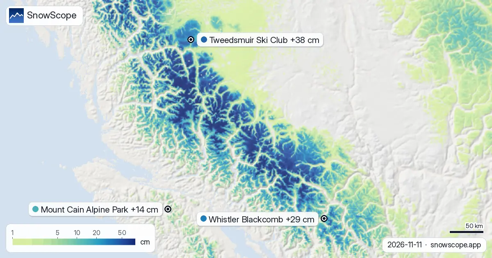
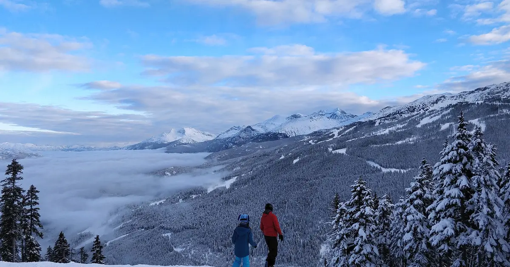

تقارير التلج · غرب كندا
غرب كندا: 201390 كم²: هادي هي المساحة اللي فيها التلج اللي كيحسبها الموديل ديالنا فغرب كندا اليوم. آخر صورة صافية لكل بلاصة، حتى ل 13 نونبر: هادشي …
المساحة اللي فيها التلج فغرب كندا من السما: 201390 كم² (13 نونبر)

201390 كم²: هادي هي المساحة اللي فيها التلج اللي كيحسبها الموديل ديالنا فغرب كندا اليوم. آخر صورة صافية لكل بلاصة، حتى ل 13 نونبر: هادشي اللي كتحتافظ بيه الطبقة ديال الساتليت. لتحت، المحطات اللي فيهم أكثر تلج فغرب كندا. صورة بسما صافية هي أقرب حاجة عندنا لتصويرة ديال السلسلة كاملة فمرة وحدة.
الخريطة ديال التلج اليوم
فالراس ديال اللائحة: Manning Park Resort، تقريبا 120 سم فالعلو. ومن بعد Big White 86 سم و Marmot Basin 54 سم.
الحساب ديال اليوم فغرب كندا: 31 محطة من 57 فيهم التلج فالعلو، و 201390 كم² ديال الأرض اللي فيها التلج.
201390 كم²: هادي هي المساحة اللي فيها التلج اللي كيحسبها الموديل ديالنا فغرب كندا اليوم. آخر صورة صافية لكل بلاصة، حتى ل 13 نونبر: هادشي اللي كتحتافظ …

واش الخزان ديال التلج كيتعمر بحال العادة؟ قارنّا التلج ديال اليوم ف 5 محطات فغرب كندا مع نفس التاريخ فكل وحدة من 46 ديال الشتوات اللي فاتو. 1 منهم …

Revelstoke توقعات التلج: حتى ل 10–21 سم متوقعة حتى ل 16 نونبر (غرب كندا). ف Whistler Blackcomb، علو الجليد غادي يكون بين 1500 م و 2700 م نهار 13 …

بين 1380 م و 3410 م: هنا فين التوقعات ديالنا كتحط علو 0 °C فغرب كندا فالأيام الجاية. فالساعات اللي سخونة كثر الحد ديال التلج، تقريبا 300 م تحت، كيطلع …

14 يوم ديال التلج الجديد فخريطة وحدة، من 13 نونبر حتى ل 26 نونبر، لكل جبل فغرب كندا: هادشي اللي كيتوقعو جوج الموديلات العالمية اللي كيوصلو لجوج …

Whistler Blackcomb، 116 سم ديال التلج: العلو ديال اليوم فالجهة الفوقانية (12 نونبر). 162 سم: هادا هو التلج اللي كاين اليوم فالجهة الفوقانية ديال …

Mount Cain Alpine Park، التلج الجديد مقارنة مع المنطقة: 15 سم ف 72 ساعة (12 نونبر). المساحة اللي فيها التلج دازت من 281250 كم² نهار 10 نونبر ل 255860 …

Mount Cain Alpine Park: شحال جاي ديال التلج؟ 37 سم حتى ل 15 نونبر. شحال ديال التلج جاي فغرب كندا، وفين؟ حتى ل 15 نونبر، التوقعات ديالنا كتعطي 83 سم ف …

38 سم ف 72 ساعة: هادا هو التلج الجديد اللي جا ل Tweedsmuir Ski Club. Tweedsmuir Ski Club زادت 38 سم ديال تلج جديد ف 72 ساعة اللي فاتو، منهم 35 سم ف …

الموديل ديال التلج والتوقعات ديالنا لليوم فغرب كندا كيوريو التلج الطري الجديد، عاصفة ديال التلج جاية، صباح فيه الجليد وعشية فيها التلج رطب و هوا سخون …

وزنّا التلج اللي كاين فالأرض، والتلج الجديد ديال 72 ساعة، واللي غادي تزيد التوقعات، واخترنا Whistler Blackcomb, Tweedsmuir Ski Club و Manning Park …

Whistler Blackcomb طاح فيها 75 سم ديال التلج الجديد فالقمة فسيمانة، ومن بعد جات عاصفة سخونة فيها 124 مم ديال الما. دليل ساهل على القاعدة، التلج الجديد، الشتا والقشرة.

فين كاين أكثر تلج فغرب كندا اليوم؟ أكثر تلج فغرب كندا اليوم: Manning Park Resort، تقريبا 110 سم فالجهة الفوقانية (الموديل). التانية Big White، 85 سم؛ …

كيفاش كيدوز عادة نهار ديال التلج ف Whitewater حدا Nelson، من أول شوفة للتوقعات حتى لآخر هبطة، مع التلج ديال 46 شتوة اللي فاتو فتلاتة ديال العلوات.

Whistler Blackcomb لكل مستوى، مع التاريخ ديالنا: تقريبا 370 cm فالقمة العادية فالوسط ف 46 شتوة اللي فاتو، مارس وأبريل أكثر شهور فيهم التلج.

السكي ف Lake Louise فالبداية ديال الموسم: علاش كتبدا بكري، كيفاش كيكون التلج ديال نونبر ودجنبر عادة ف 46 شتوة اللي فاتو، وكيفاش تتزلج على تلج مازال رقيق.

تزلج الفرق ديال العلو كامل ديال Revelstoke فراسك اللول: التلج فالقمة، فالوسط وفالتحت فالواد ف 46 شتوة اللي فاتو، وإمتى كل جزء كيكون فأحسن حالة.

Banff Sunshine Village شهر بشهر: تقريبا 100 cm فالوسط فمارس عادي ف 46 شتوة اللي فاتو، أبريل أكثر شهر فالفوق، والموسم حتى ل آخر ماي.

إلا بغيتي أكثر تلج فغرب كندا اليوم، شوف Mount Washington Alpine Resort (كندا): تقريبا 145 سم فالعلو. من بعدها Whistler Blackcomb (131 سم) و Silver …

Whistler Blackcomb طاح فيها 100 سم ديال تلج جديد ف 72 ساعة اللي فاتو، منهم 68 سم ف 24 ساعة اللي فاتو. دابا فيها تقريبا 131 سم فالجهة الفوقانية، حسب …


حتى ل 10 نونبر، التوقعات ديالنا كتعطي 103 سم ف Whistler Blackcomb، 99 سم ف Ski Callaghan و 74 سم ف Mount Cain Alpine Park. الأرقام ديال المحطات ديال …

Ski Callaghan طاح فيها 56 سم ديال تلج جديد ف 72 ساعة اللي فاتو، منهم 9 سم ف 24 ساعة اللي فاتو. دابا فيها تقريبا 48 سم فالجهة الفوقانية، حسب الموديل …

Ski Callaghan طاح فيها 44 سم ديال تلج جديد ف 72 ساعة اللي فاتو، منهم 32 سم ف 24 ساعة اللي فاتو. دابا فيها تقريبا 41 سم فالجهة الفوقانية، حسب الموديل …

حتى ل 9 نونبر، التوقعات ديالنا كتعطي 74 سم ف Whistler Blackcomb، 63 سم ف Ski Callaghan و 50 سم ف Mount Cain Alpine Park. الأرقام ديال المحطات ديال …

أكثر تلج فغرب كندا كاين ف Silver Star: تقريبا 112 سم فالجهة الفوقانية، حسب الموديل ديال التلج ديالنا. من بعدها Big White (90 سم) و Harper Mountain …

حتى ل 8 نونبر، التوقعات ديالنا كتعطي 94 سم ف Whistler Blackcomb، 93 سم ف Ski Callaghan و 70 سم ف Tweedsmuir Ski Club. الأرقام ديال المحطات ديال …

حتى ل 7 نونبر، التوقعات ديالنا كتعطي 48 سم ف Ski Callaghan، 47 سم ف Whistler Blackcomb و 34 سم ف Mount Cain Alpine Park. الأرقام ديال المحطات ديال …

جمعنا العلو ديال التلج ديال اليوم، والتلج الجديد ديال 72 ساعة، والتوقعات باش نختارو Mount Cain Alpine Park, Whistler Blackcomb و Silver Star. من هاد …

أكثر تلج فغرب كندا كاين ف Big White: تقريبا 91 سم فالجهة الفوقانية، حسب الموديل ديال التلج ديالنا. من بعدها Silver Star (84 سم) و Harper Mountain (74 …

حتى ل 6 نونبر، التوقعات ديالنا كتعطي 33 سم ف Ski Callaghan، 31 سم ف Mount Cain Alpine Park و 25 سم ف Whistler Blackcomb. الأرقام ديال المحطات ديال …